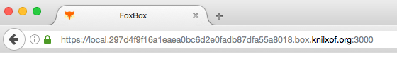

Project Link Networking
For the last few months, I have been involved in Project Link, one of Mozilla's Connected Devices new research projects that aims to create a personal User Agent for the smart homes.
We have recently completed our first milestone where we managed to prototype a device that is able to communicate with a small set of other different devices through some wireless communication protocols like Zigbee and Z-Wave and that exposes an HTTP API for clients to get moderated access to these devices through the Link hub. So as today, we are able to setup a Link device in a network where other devices like a set of smart light bulbs, a smart door lock and a motion sensor are connected and we are able to create rules, from inside and outside of that network, to do things like turning off the lights, locking the door and sending a notification when the motion sensor detects that the user leaves her home.
Making Link communicate with the different devices through Zigbee or Z-Wave was certainly not an easy task and it required a lot of effort from many members of the team. But it was something that somehow we knew that we could do. In the end, these are known protocols, and even if we had to write a lot of code from scratch because of the choice of technology (Rust), there are already a lot of products in the market based on these technologies and a few examples of code that we could take as a starting point for our work.
To me, one of the most interesting challenges that we had to face during this initial stage of the project has been how to discover and securely connect to Link (a.k.a the box) from the client side while keeping a decent UX.
As Mozillians, we believe in the power of the web, so one of our self-imposed initial requirements for this project was that we wanted our client demo application to be written entirely with web technologies. We wanted to make this client potentially able to run on any platform with a modern web browser. And there were also other requirements:
- This client had to be able to access Link locally, from the same network where the Link device was running on, but also remotely, from outside of that network.
- The connection between Link and the client had to be securely encrypted in both cases (local and remote access).
- And both things needed to happen seamlessly and transparently for the user.
Michiel B. de Jong did an excellent research work about the discovery and secure connection area and he proposed a few different solutions to these problems, that included different combinations of cloud, QR codes, Let's Encrypt, mDNS and other technologies and protocols.
While we do not discard implementing any other of these proposals for the next phases of the project, for the initial prototype we ended up choosing a solution that most part of the team considered that had a good balance between security, privacy and user friendly experience and that could work cross platform and cross browser, taking advantage of the full power of the web.
Discovering the box
For the discovery part, we implemented the same mechanism that Philips uses to discover their Hue Lights Bridge. They call this nUPNP (network UPNP). And it is pretty simple. It requires Link to periodically register itself with a server in the cloud that has a known URL for the client. The data that is stored for this registration is a match between Link's public and local IP addresses. To get the local address, the client just needs to do a HTTP GET request to the registration server ping endpoint, which should return a JSON object containing this information. This request has to be done from the same network Link is connected to.
Securely connecting to the box
Unfortunately, we cannot securely connect to local IP addresses through HTTPS. At least not with a proper UX that would not require a terrified user to accept warnings about insecure connections, and even in that case (with a self-signed certificate), it would be quite a poor security solution. We needed host names and a trusted CA for this. And here is where Let'sEncrypt and Plex's solution enter in the game.
{kind=link}
We heard about this company called Plex that has a very similar use case as ours and that is offering secure TLS connections to all their users. They have these media servers that users can self-host in their machines and can access to them securely from other devices. You can read about the details of Plex's implementation in this blog post and see how it slightly defers from ours.
Remotely accessing the box (a.k.a tunneling)
To provide remote access to Link for those users that choose to have this kind of feature, we initially tried to use ngrok, but we found out that they do not support SNI on their open source version. So we ended up moving to PageKite, which offers the same core functionality but also provides SNI support.
Putting it all together
With all the above we ended up implementing the following bootstrap process for Link:
- Link exposes HTTP and WebSockets services.
- First thing that Link does is to generate a self-signed certificate that becomes its identifier.
- It connects to an API on
knilxof.org(our dev server) to create its public DNS zone under<fingerprint>.knilxof.org, using its self-signed certificate as a client certificate. The API server checks the fingerprint from the DNS zone edit request against the fingerprint of the client certificate presented. - Now that the Box has a public DNS zone it can control, it can get a LetsEncrypt certificate, using the DNS-01 challenge.
- Link sets its main DNS A record to its current local IP address which it obtained via DHCP earlier. It will update this A record whenever its local IP address changes.
- It also sets two or more mirror A records to its current local IP address. The idea here being that only one of the records will be cached by caching DNS servers, so switching to the other one at the right time will avoid downtime due to DNS propagation delays. This is currently not implemented.
- If Link is setup to allow remote access, it starts up a PageKite client, which connects to a PageKite frontend, and adds the IP address of the public interface to the PageKite frontend into its DNS zone.
- With the local, mirrors and tunneled URLs, Link sends a registration request to the nUPNP like registration server.
After the above process is completed, when the user browses to our client demo application, the app makes a cross-origin request to the registration server ping endpoint to obtain the URLs the app can use to securely connect to Link.
GET /ping HTTP/1.1
HTTP/1.1 200 OK
Access-Control-Allow-Origin: *
Access-Control-Allow-Headers: accept, authorization, content-type
Content-Type: application/json; charset=utf-8
Access-Control-Allow-Methods: GET, POST, PUT
Content-Length: 312
Date: Fri, 22 Apr 2016 14:39:44 GMT
[{"public_ip":"88.xxx.xxx.xxx","client":"80a3c3ff0ffc7da455214fe7daaed9216bc4a5a6","message":"{\"local_origin\":\"https://local.80a3c3ff0ffc7da455214fe7daaed9216bc4a5a6.box.knilxof.org:3000\",\"tunnel_origin\":\"https://remote.80a3c3ff0ffc7da455214fe7daaed9216bc4a5a6.box.knilxof.org\"}","timestamp":1461335726}]
The connection to the box is completely seamless for the user as she is never asked to enter a URL or to add any security exception on her browser.

Credits
Most part of the design and implementation work has been done by Michiel B. de Jong and Sam Giles.